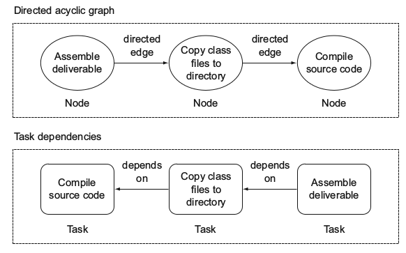

构建工具
你需要的就是一套工具，能把你自动化构建的需求表示成可执行的顺序的任务(tasks)，比如编译源代码，拷贝生成的class文件，组装交付。每一个任务都是一个工作单元，任务的顺序很重要，我们把任务和相互之间的依赖建模成一种有向无环图，比如下面这个： 
有向无环图
包含两个部分：
- 节点(node)：一个工作单元，在这里就是一个任务，比如编译源代码
- 边(edge): 一个有方向的边，表示相邻节点之间的依赖关系，如果一个任务定义了依赖，这个依赖的任务要在这个任务之前执行。

构建工具的组成
Build File. 包含构建需要的配置，定义了项目的依赖关系，比如第三方库的，以及以任务的形式存在的指令，定义了任务之间的先后顺序。
Build inpus and outputs: 任务把输入经过一系列步骤后产生输出。
依赖管理。